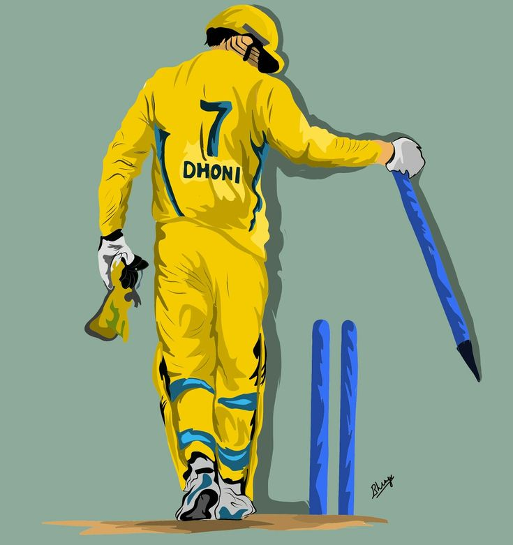

Face the failure, until the failure fails to face you
"The process is more important than the results. And if you take care of the process, you will get the results."
Mahendra Singh Dhoni was born on July 7, 1981 at Ranchi, Jharkhand located in the east corner of India. He studied at DAV Jawahar Vidya Mandir where he was keenly interested in football and badminton. He was the goalkeeper of his football team and was able to play for the district and state level. But on the insistence of his football coach, he tried out to play cricket. He was able to perform wicket keeping especially well which allowed him entry into a local cricket club called the Commando cricket club where he played from 1995-1998. In the 1997/98 season, his superb performances in the Vinoo Mankad Under-16 Championship attracted the selector’s eye. An attacking right-handed middle-order batsman and wicket-keeper, he is widely regarded as one of the greatest finishers in limited-overs cricket. He made his One Day International (ODI) debut in December 2004 against Bangladesh, and played his first Test a year later against Sri Lanka. Dhoni holds numerous captaincy records such as most wins by an Indian captain in Tests and ODIs, and most back-to-back wins by an Indian captain in ODIs.
Under his captaincy,
INDIA-
- Won the ICC T20 World Cup.
- Won the ICC ODI World Cup.
- Held the numero uno position in Test ranking for 18 months.
- Won ICC Champions Trophy.
- In the captaincy of MSD Chennai Super Kings won the 5 IPL titles in 2010, 2011, 2018, 2021, 2023.
- Championship title in 2010 & 2014 edition of Champions Leage Twenty20.